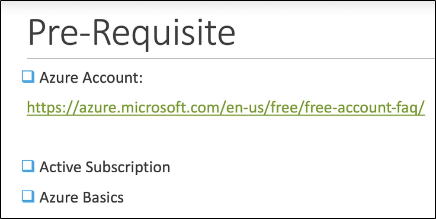

Kubernetes on Azure (AKS)

Logghiamo e cerchiamo per Kubernetes Service:

Creiamo uno di base:

Aggiungiamo un Resource Group:
Lasciamo di default le altre opzioni.

Andiamo a Review+Create e creiamo il tutto:


Ora ci basterà cercare il nostro Kubernetes Service tramite il node dato:

Per accedere al Cloud, accediamo con la Cloud Shell:

Crea uno storage se richiesto:


Ora possiamo accedere da shell cloud ai nostri elementi:

Ora basta fare i git clone + kubectl create -f e ci siamo!